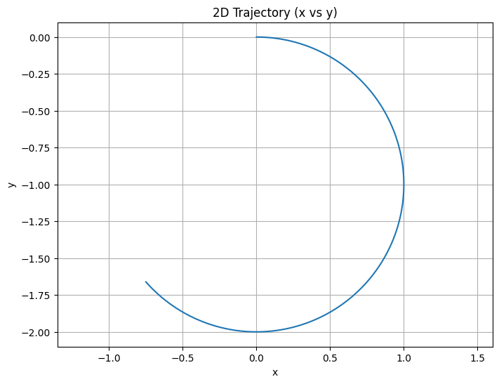
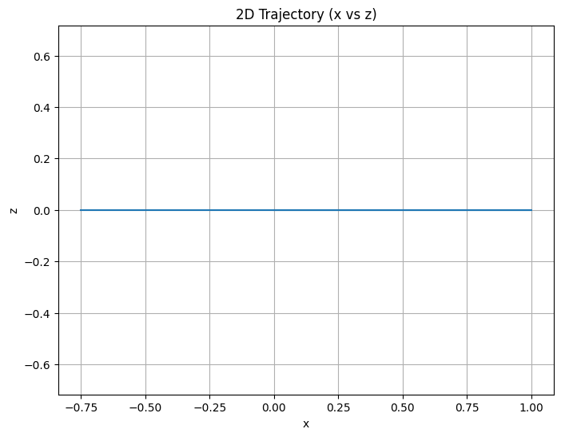
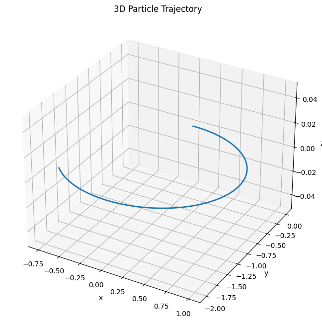

import numpy as np import matplotlib.pyplot as plt from mpl_toolkits.mplot3d import Axes3D
# --- Simulation parameters --- dt = 0.001 # time step total_time = 5 # total simulation time num_steps = int(total_time / dt)
# Particle properties q = 1.0 # charge (Coulombs) m = 1.0 # mass (kg)
# Initial conditions: position and velocity initial_position = np.array([0.0, 0.0, 0.0]) initial_velocity = np.array([1.0, 0.0, 0.5]) # Can be tuned to see helical motion
# Field configurations (modify these to explore different scenarios)
# 1. Uniform magnetic field only (E = 0) E_field = np.array([0.0, 0.0, 0.0]) B_field = np.array([0.0, 0.0, 1.0])
# Uncomment one of the following scenarios for combined fields or crossed fields:
# 2. Combined uniform electric and magnetic fields: # E_field = np.array([0.5, 0.0, 0.0]) # B_field = np.array([0.0, 0.0, 1.0])
# 3. Crossed electric and magnetic fields (E ⊥ B): # E_field = np.array([0.5, 0.0, 0.0]) # B_field = np.array([0.0, 1.0, 0.0])
def lorentz_acceleration(v, E, B, q, m): """ Compute acceleration from Lorentz force: a = (q/m)*(E + v x B) """ return (q/m) * (E + np.cross(v, B))
def rk4_step(position, velocity, dt, E, B, q, m): """ One step of RK4 integration for a charged particle. """ # Define the derivative function def derivatives(pos, vel): return vel, lorentz_acceleration(vel, E, B, q, m)
# k1 values
k1_v, k1_a = derivatives(position, velocity)
# k2 values
k2_v, k2_a = derivatives(position + 0.5 * dt * k1_v,
velocity + 0.5 * dt * k1_a)
# k3 values
k3_v, k3_a = derivatives(position + 0.5 * dt * k2_v,
velocity + 0.5 * dt * k2_a)
# k4 values
k4_v, k4_a = derivatives(position + dt * k3_v,
velocity + dt * k3_a)
new_position = position + (dt / 6) * (k1_v + 2 * k2_v + 2 * k3_v + k4_v)
new_velocity = velocity + (dt / 6) * (k1_a + 2 * k2_a + 2 * k3_a + k4_a)
return new_position, new_velocity
def simulate_motion(initial_position, initial_velocity, dt, num_steps, E, B, q, m): """ Simulate the particle motion over time using RK4 integration. Returns arrays of positions and velocities. """ pos = np.array(initial_position, dtype=float) vel = np.array(initial_velocity, dtype=float)
positions = np.empty((num_steps, 3))
velocities = np.empty((num_steps, 3))
for i in range(num_steps):
positions[i] = pos
velocities[i] = vel
pos, vel = rk4_step(pos, vel, dt, E, B, q, m)
return positions, velocities
# Run the simulation positions, velocities = simulate_motion(initial_position, initial_velocity, dt, num_steps, E_field, B_field, q, m)
# --- Visualization ---
# 2D Plot: x vs y plt.figure(figsize=(8, 6)) plt.plot(positions[:, 0], positions[:, 1]) plt.title("2D Trajectory (x vs y)") plt.xlabel("x") plt.ylabel("y") plt.grid(True) plt.axis("equal") plt.show()

# 2D Plot: x vs z plt.figure(figsize=(8, 6)) plt.plot(positions[:, 0], positions[:, 2]) plt.title("2D Trajectory (x vs z)") plt.xlabel("x") plt.ylabel("z") plt.grid(True) plt.axis("equal") plt.show()

# 3D Plot of the trajectory fig = plt.figure(figsize=(10, 8)) ax = fig.add_subplot(111, projection='3d') ax.plot(positions[:, 0], positions[:, 1], positions[:, 2], lw=2) ax.set_title("3D Particle Trajectory") ax.set_xlabel("x") ax.set_ylabel("y") ax.set_zlabel("z") plt.show()
